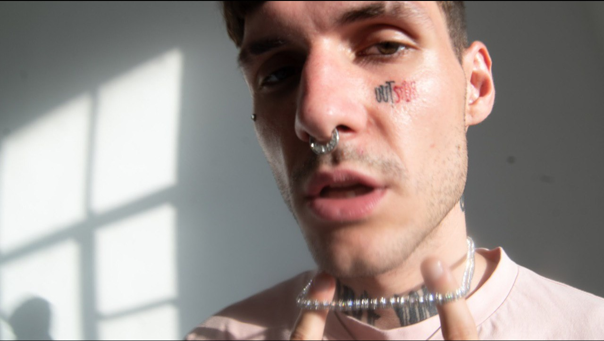

LOVV66 (настоящее имя – Иван Шабанов) – современный рэп-исполнитель с яркой, неординарной внешностью. Светлые волосы, татуировки на лице, септум в носу, серьги, микродермалы, цветные волосы, необычная одежда – это его стиль, так он выражает свою личность. Сам Иван агрессии или презрения к своему внешнему виду не замечает, называет себя Color Man. Творчество Ивана тоже необычное, но современная публика его треки слушает на репите. Иван Шабанов родом из Брянска. Он появился на свет 20 сентября 1997 года. Его родители – простые люди среднего класса. У Ивана есть младшая сестра Маша. Матери нет, но Константин – отец – делал все, чтобы у детей было все, что им нужно. Ваня особо не распространяется о своей семье, рассказывает только то, что родители всегда окружали его заботой. Он говорит, что интерес к творчеству у него от отца. Иван и Мария росли в атмосфере любви, что, несомненно, положительно сказалось на будущей карьере LOVV66. Еще будучи учеником, Ваня начал увлекаться музыкой, а именно – стилем рэп. Сочиняя стихи, рифмуя тексты, он проникся этой культурой и тогда решил посвятить этому свою жизнь. Подростком LOVV66 увлекался творчеством уральского исполнителя Вити АК. Затем, после школы, он переехал из Брянска в Москву, чтобы всерьез заняться карьерой музыканта. Впервые о нем услышали на широкой публике в 2020 году, когда он выпустил свой сольный альбом. Этот сборник с названием «Lovv planet» состоит из 13 песен. После выхода альбома его публика значительно выросла, появились преданные фанаты. Шабанов даже дал несколько концертов на территории Москвы и Московской области. По поводу своего псевдонима Иван сообщил, что в известной игре «Taken» был персонаж Marshal LaW. Ему понравилось, как звучит его имя. Только он решил оставить не W в конце слова, а поставить VV – так интереснее. О цифрах – в граффити есть тренд ставить номер улицы в конце ника. Но номеров улиц у нас нет, поэтому цифры 66 – это номер школы, где учился Шабанов. После записи сольного альбома LOVV66 стал работать с другими известными музыкантами. К ним относятся SEEMEE (выпустили совместный трек «New Era», затем еще несколько), May Wave$ («Stop Calling»), SODA LUV (и их неоднозначный трек «На моих пальцах»), YOLO TAG (было создано несколько работ, но одна из самых интересных – небольшой альбом «YOLOVV») и другие. Ваня продолжает творить вместе с другими молодыми звездами, тем самым завоевывая больше популярности. Также LOVV66 является участником творческой команды «Fiji Gang». Свой второй альбом Шабанов записал в начале 2021 года. В создании этого сборника участвовали и другие рэп-исполнители, с которыми он часто выступает на разных концертах. Самая известная песня Ивана на данный момент – «50 К в сумке у папы». 50к в сумке у папы (В сумке у папы) 50к в сумке у папы (В сумке у папы) 50к в сумке у папы (В сумке у папы) 50к в сумке у папы (50к, 50к) 50к в сумке у папы (В сумке у папы) 50к в сумке у папы (В сумке у папы) 50к в сумке у папы (В сумке у папы) 50к в сумке у папы (50к, 50к) 50к в сумке у папы (В сумке у папы) 50к в сумке у папы (В сумке у папы) 50к в сумке у папы (В сумке у папы) 50к в сумке у папы (50к, 50к) 50к в сумке у папы (В сумке у папы) 50к в сумке у папы (В сумке у папы) 50к в сумке у папы (В сумке у папы) 50к в сумке у папы (50к, 50к) 50к в сумке у папы (В сумке у папы) 50к в сумке у папы (В сумке у папы) 50к в сумке у папы (В сумке у папы) 50к в сумке у папы (50к, 50к) 50к в сумке у папы (В сумке у папы) 50к в сумке у папы (В сумке у папы) 50к в сумке у папы (В сумке у папы) 50к в сумке у папы (50к, 50к) 50к в сумке у папы (В сумке у папы) 50к в сумке у папы (В сумке у папы) 50к в сумке у папы (В сумке у папы) 50к в сумке у папы (50к, 50к) 50к в сумке у папы (В сумке у папы) 50к в сумке у папы (В сумке у папы) 50к в сумке у папы (В сумке у папы) 50к в сумке у папы (50к, 50к) 50к в сумке у папы (В сумке у папы) 50к в сумке у папы (В сумке у папы) 50к в сумке у папы (В сумке у папы) 50к в сумке у папы (50к, 50к) 50к в сумке у папы (В сумке у папы) 50к в сумке у папы (В сумке у папы) 50к в сумке у папы (В сумке у папы) 50к в сумке у папы (50к, 50к) 50к в сумке у папы (В сумке у папы) 50к в сумке у папы (В сумке у папы) 50к в сумке у папы (В сумке у папы) 50к в сумке у папы (50к, 50к) 50к в сумке у папы (В сумке у папы) 50к в сумке у папы (В сумке у папы) 50к в сумке у папы (В сумке у папы) 50к в сумке у папы (50к, 50к) 50к в сумке у папы (В сумке у папы) 50к в сумке у папы (В сумке у папы) 50к в сумке у папы (В сумке у папы) 50к в сумке у папы (50к, 50к) 50к в сумке у папы (В сумке у папы) 50к в сумке у папы (В сумке у папы) 50к в сумке у папы (В сумке у папы) 50к в сумке у папы (50к, 50к) 50к в сумке у папы (В сумке у папы) 50к в сумке у папы (В сумке у папы) 50к в сумке у папы (В сумке у папы) 50к в сумке у папы (50к, 50к) 50к в сумке у папы (В сумке у папы) 50к в сумке у папы (В сумке у папы) 50к в сумке у папы (В сумке у папы) 50к в сумке у папы (50к, 50к) 50к в сумке у папы (В сумке у папы) 50к в сумке у папы (В сумке у папы) 50к в сумке у папы (В сумке у папы) 50к в сумке у папы (50к, 50к) 50к в сумке у папы (В сумке у папы) 50к в сумке у папы (В сумке у папы) 50к в сумке у папы (В сумке у папы) 50к в сумке у папы (50к, 50к) 